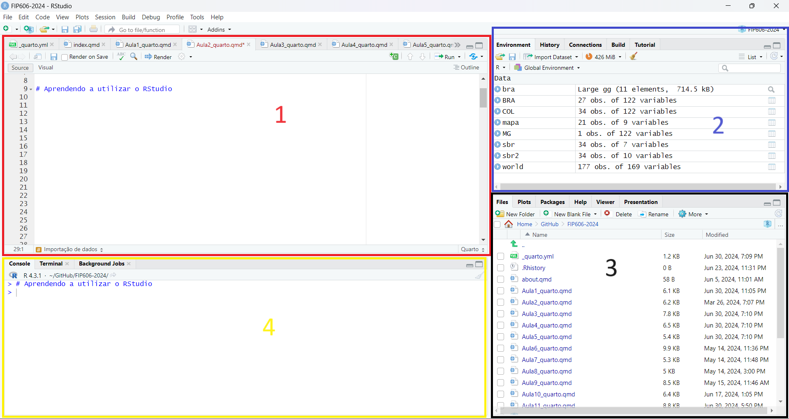

Introdução ao R
O que é o R?
R é uma linguagem de programação que vem se especializando na manipulação, análise e visualização de dados. Foi criado originalmente por Ross Ihaka e por Robert Gentleman no departamento de Estatística da Universidade de Auckland, Nova Zelândia.
Dentre as suas vantagens, pode-se destacar a sua adaptação aos sistemas operacionais Linux, Mac OS e Windows, sendo um programa de código livre e desenvolvido por seus próprios usuários, que criam documentos facilmente reprodutíveis e modificáveis. Além disso, possui uma comunidade extensa e ativa de usuários ao redor do mundo que todos os dias desenvolvem novas funcionalidades e pacotes para o programa e oferecem soluções para os problemas que possam surgir.
O uso do software R é facilitado quando utilizamos o software RStudio, um ambiente de desenvolvimento integrado ao R, que apresenta uma interface gráfica mais amigável para o R, com muitos recursos úteis que facilitam a visualização do código R, a importação de conjunto de dados, a visualização de figuras, etc.
Instalação do R e RStudio
Como o RStudio é uma interface para uso do R, ele deve ser instalado após a instalação do R.
O R é instalado a partir da página do R na internet, que pode ser acessada clicando aqui.
O RStudio é instalado em uma página separada, que pode ser acessada clicando aqui.
Aprendendo a utilizar o RStudio

Ao abrir o RStudio, aparece uma tela com 4 painéis assim como apresentado na imagem acima. Entender a função de cada painel é essencial para o uso do RStudio.
Painel 1: Neste painel é onde será escrito e criado o arquivo com o código R a ser executado e também onde é visualizado e editado um arquivo já criado. É possível trabalhar simultaneamente com 2 ou mais arquivos com códigos R. Para executar uma linha basta pressionar Ctrl + enter, ou selecionar as linhas que se quer executar e clicar sobre o botão Run.
Painel 2: Este painel possui várias abas. Na aba Environment, são indicados os objetos e variáveis criados no R, que podem ser matrizes, listas e planilhas de dados. Na aba History é mostrado todo o histórico de comandos executados.
Painel 3: Na aba Files é possível visualizar todos os arquivos que estão dentro da pasta de trabalho do R. Na aba Plots é onde é visualizado todos os gráficos produzidos com o R, e de onde é possível salvar individualmente cada figura clicando em Export. A aba Packages mostra a lista de todos os pacotes atualmente instalados no R. Na aba Help é possível obter ajuda sobre funções, pacotes e sobre conjuntos de dados específicos.
Painel 4: Na aba Console é onde aparecem os códigos compilados no R e os resultados obtidos com sua execução. Ao invés de executar o código R a partir do painel 1, o código R pode ser digitado diretamente na linha de comandos. Não é possível apagar os comandos que foram compilados no R nem os seus resultados, mas é possível limpar a janela clicando Ctrl+l.
RStudio Project
Antes de começar a executar comandos no R, a criação de um RStudio Projects é uma ótima forma de manter o seu trabalho organizado. Ele mantém todos os scripts, documentos e dados em um único lugar, deixando-os separados de outros arquivos e projetos. Isso permite trabalhar com diferentes projetos ao mesmo tempo sem um interferir no outro.
Para criar um novo projeto, é necessário clicar em File, depois New Project, escolher um Directory (pasta do arquivo) existente ou criar um novo e nomear o projeto.
R Script, R Markdown e Quarto
Agora que você aprendeu como o RStudio funciona, o próximo passo é começar a montar os seus scripts. O script é o documento onde são escritos todos os comandos que serão executados pelo programa R. Para criar um novo script, basta clicar em New File e selecionar R Script. Também é possível criar um novo script pelo atalho Ctrl + Shift + N.
Além do R Script, 2 outros tipos de arquivo podem ser criados através do New File: o R Markdown e o Quarto Document.
Qual arquivo usar?
Entre esses 3 arquivos, recomenda-se o uso do Quarto Document por ser uma versão mais atualizada e conter muito mais funções do que os demais arquivos. Além dele ser capaz de ser renderizado em formatos como HTML, Word e outros.
Aprendendo a utilizar o Quarto
O Quarto é uma versão mais avançada e atualizada do R Markdown, incluindo dezenas de novos recursos e sendo capaz de renderizar a maioria dos arquivos .Rmd existentes sem modificação, possibilitando a criação de relatórios ou textos em diferentes formatos (HTML, PDF, Word e outros).
Para a criação de um documento R Quarto Markdown, deve-se clicar em New File e posteriormente em Quarto Document. Após nomear o arquivo e escolher o formato em que ele será renderizado (HTML, PDF ou Word), ele estará pronto para ser usado.
Chunk
O principal mecanismo para executar qualquer código no R envolve primeiro a criação de um chunk. O chunk permite que as funções e demais códigos sejam executadas e rodadas no documento. Um atalho que pode ser usado para sua criação é o Ctrl + Alt + I.
Note
Qualquer código que tenha como função a importação, manipulação, análise e visualização de dados precisa ser realizado dentro de um chunk para que ele possa ser lido e executado pelo R!
Texto
Durante a escrita, podemos colocar palavras em itálico usando 1 asterisco no início e no final da palavra, do mesmo modo podemos colocar palavras em negrito usando 2 asteriscos.
Para criar títulos e subtítulos, podemos colocar “#” no início da frase. Um “#” representa o título, enquanto “##” e “###” representam subtítulos.
Dentro de um chunk, podemos colocar palavras e/ou frases entre aspas ou com um # na frente para que ele seja rodado como um texto, e não como dado.
Estruturas da linguagem R
Valores ou values: são criadas pelo programador com a finalidade de salvar informações. As informações inseridas em um valor ficarão disponíveis para utilização enquanto o valor existir.
Funções: são um conjunto de instruções pré-definidas que executam uma ou mais tarefas. Existem muitas funções já prontas para sua utilização, salvas em pacotes desenvolvidos para facilitar a criação de scripts. Quanto mais funções o programador conhecer, mais fácil será escrever seus scripts.
Operadores: com os operadores fazemos operações matemáticas, como soma, divisão, multiplicação, etc.
Tipos de dados: numeric (números), characters (operações com letras, palavras, frases, etc.), factors (categorias) e logicals (verdadeiro ou falso). Esses são os tipos de dados básicos existentes na linguagem R.
Estrutura de dados: vectors, que são uma sequência de dados do mesmo tipo. Lists, que são vetores com tipos de dados diferentes. Matrix, que possuem duas dimensões e um tipo de dado. Data frames, que são estruturas mais complexas, similares as planilhas do Excel e com tipos de dados diferentes.
Condicional: No condicional If, dizemos que se algo é verdadeiro, uma ação deve ser realizada, se não é, outra será (ou nenhuma).
Atribuição de Valores
Quando queremos atribuir um valor para algum nome, podemos utilizar <-. Desse modo, se quisermos trabalhar com esses valores ou conjunto de valores atribuídos a um nome, podemos utilizar diretamente o nome, sem precisar repetir o valor.
x <- 10
x[1] 10y <- x*10
y[1] 100z <- x*y
z[1] 1000Conjunto de valores e data frame
Para criar um conjunto de valores, pode-se utilizar c()e colocar os valores desejados. Caso os valores sejam contínuos, pode-se agrupá-los usando :, desse modo o conjunto será formado por todos os valores que estão entre os dois números colocados.
A <- c(1:10)
A [1] 1 2 3 4 5 6 7 8 9 10B <- c(11:20)
B [1] 11 12 13 14 15 16 17 18 19 20O data frame é uma estrutura em que os dados podem ser organizados em formato de tabela. Ele pode ser criado por meio da junção de dois ou mais conjunto de dados, usando a função data.frame(), mas, para isso, o número de valores presentes nos conjuntos deve ser o mesmo.
df <- data.frame(A,B)
df A B
1 1 11
2 2 12
3 3 13
4 4 14
5 5 15
6 6 16
7 7 17
8 8 18
9 9 19
10 10 20Pipe
Quando quisermos que todas as funções executadas estejam se referindo a um determinado data frame sem precisar chamá-lo repetidamente, podemos usar um pipe. O pipe, executado por |>ou %>%, indica que todas as funções abaixo dele estão se referindo ao data frame especificado. Um atalho para a criação do pipe é Ctrl + Shift + M.
df2 <- cars
cars speed dist
1 4 2
2 4 10
3 7 4
4 7 22
5 8 16
6 9 10
7 10 18
8 10 26
9 10 34
10 11 17
11 11 28
12 12 14
13 12 20
14 12 24
15 12 28
16 13 26
17 13 34
18 13 34
19 13 46
20 14 26
21 14 36
22 14 60
23 14 80
24 15 20
25 15 26
26 15 54
27 16 32
28 16 40
29 17 32
30 17 40
31 17 50
32 18 42
33 18 56
34 18 76
35 18 84
36 19 36
37 19 46
38 19 68
39 20 32
40 20 48
41 20 52
42 20 56
43 20 64
44 22 66
45 23 54
46 24 70
47 24 92
48 24 93
49 24 120
50 25 85df2$dist2 <- c(1:50) # O $ é usado para criar uma nova coluna dentro do df2
df2 speed dist dist2
1 4 2 1
2 4 10 2
3 7 4 3
4 7 22 4
5 8 16 5
6 9 10 6
7 10 18 7
8 10 26 8
9 10 34 9
10 11 17 10
11 11 28 11
12 12 14 12
13 12 20 13
14 12 24 14
15 12 28 15
16 13 26 16
17 13 34 17
18 13 34 18
19 13 46 19
20 14 26 20
21 14 36 21
22 14 60 22
23 14 80 23
24 15 20 24
25 15 26 25
26 15 54 26
27 16 32 27
28 16 40 28
29 17 32 29
30 17 40 30
31 17 50 31
32 18 42 32
33 18 56 33
34 18 76 34
35 18 84 35
36 19 36 36
37 19 46 37
38 19 68 38
39 20 32 39
40 20 48 40
41 20 52 41
42 20 56 42
43 20 64 43
44 22 66 44
45 23 54 45
46 24 70 46
47 24 92 47
48 24 93 48
49 24 120 49
50 25 85 50library(tidyverse)
df2 |>
mutate(dist3 = dist2+1) |>
select(1) speed
1 4
2 4
3 7
4 7
5 8
6 9
7 10
8 10
9 10
10 11
11 11
12 12
13 12
14 12
15 12
16 13
17 13
18 13
19 13
20 14
21 14
22 14
23 14
24 15
25 15
26 15
27 16
28 16
29 17
30 17
31 17
32 18
33 18
34 18
35 18
36 19
37 19
38 19
39 20
40 20
41 20
42 20
43 20
44 22
45 23
46 24
47 24
48 24
49 24
50 25Renderização
Para transformar esse documento .qmd em HTML ou em outros formatos, é necessário renderizar o documento. Para isso basta clicar no Render para que o documento ou site seja criado.
Quer saber mais sobre o R?
Acesse esses livros e sites para mais informações sobre o R: - R for Data Science - The Art of Data Science - An Introduction to R